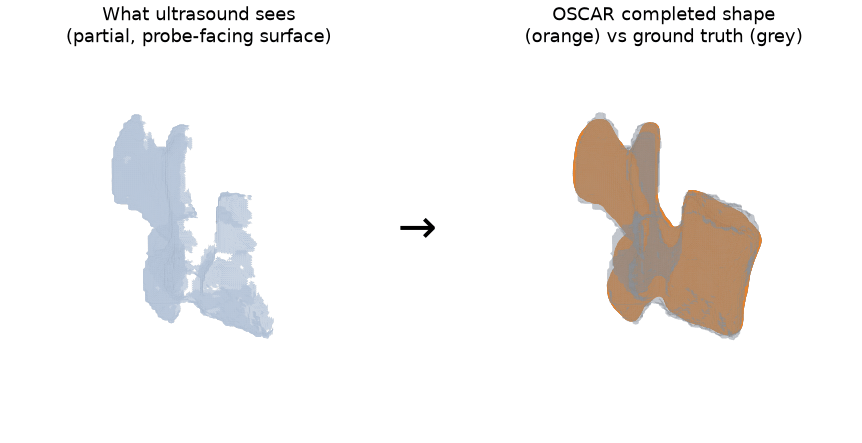
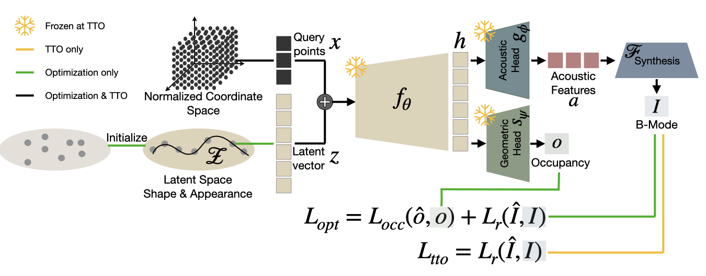
Accurate 3D reconstruction of vertebral anatomy from ultrasound is important for guiding minimally invasive spine interventions, but it remains challenging due to acoustic shadowing and view-dependent signal variations. We propose an occupancy-based shape-completion method that reconstructs complete 3D anatomical geometry from partial ultrasound observations. Crucially for intra-operative applications, our approach extracts the anatomical surface directly from the image, avoiding the need for anatomical labels during inference. This label-free completion relies on a coupled latent space representing both image appearance and underlying anatomical shape. By leveraging a Neural Implicit Representation that jointly models spatial occupancy and acoustic interactions, the method becomes implicitly aware of unseen regions without explicit shadowing labels, through tracking acoustic signal transmission. We show that this method outperforms state-of-the-art shape completion for B-mode ultrasound by 80% in HD95, validated both in silico and on phantom ultrasound with registered CT ground truth.
For a 3D point x and subject latent z, a shared backbone fθ produces a joint feature that two heads decode: an acoustic head predicting reflection / scatter / attenuation, and an occupancy head predicting O(x|z). A differentiable ray-based renderer turns the acoustic field into a B-mode image; by integrating signal transmission along each scanline, the model becomes implicitly aware of shadowed (occluded) anatomy. Forcing both heads to share the representation couples acoustics and geometry, so optimizing the latent on the visible anatomy completes the occluded shape.
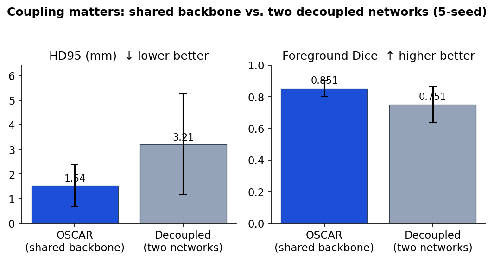
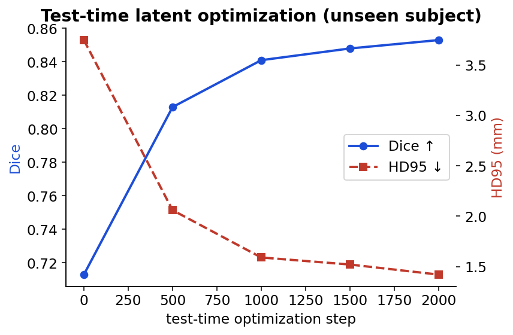
OSCAR outperforms the SOTA B-mode shape-completion method SITD[1] and the backbone NISF[2], with overall HD95 improvements of 80% and 61% on simulation.
| Domain | Method | Label | HD95 (mm) ↓ | Chamfer ↓ | F1 ↑ |
|---|---|---|---|---|---|
| Sim. | SITD | ✓ | 5.93 ± 0.94 | 119.87 ± 17.04 | 0.21 ± 0.04 |
| NISF | ✗ | 3.03 ± 0.92 | 88.38 ± 14.43 | 0.33 ± 0.05 | |
| OSCAR | ✗ | 1.17 ± 0.38 | 56.57 ± 6.64 | 0.54 ± 0.06 | |
| Phan. | SITD | ✓ | 7.17 ± 1.05 | 104.66 ± 20.50 | 0.23 ± 0.07 |
| NISF | ✗ | 8.61 ± 2.85 | 146.98 ± 22.57 | 0.23 ± 0.01 | |
| OSCAR | ✗ | 7.46 ± 3.41 | 105.34 ± 20.99 | 0.27 ± 0.05 |
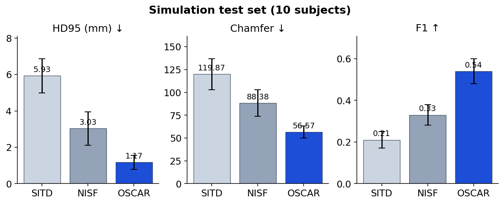
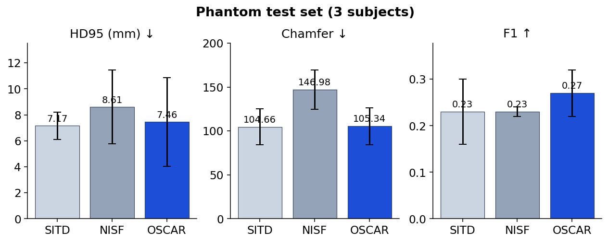
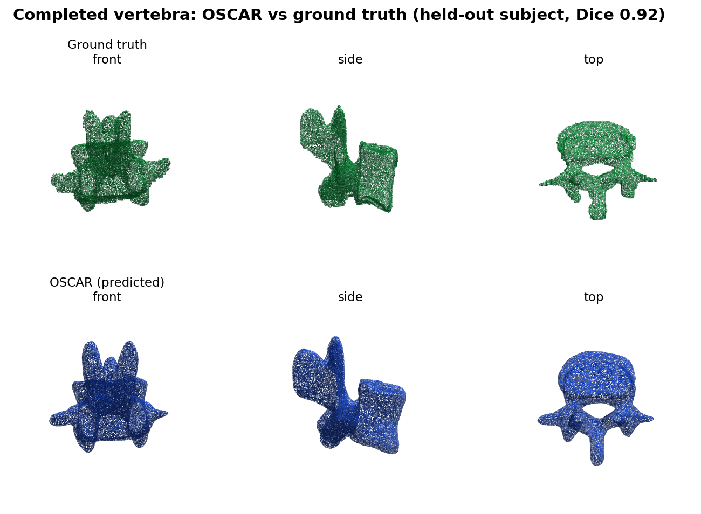
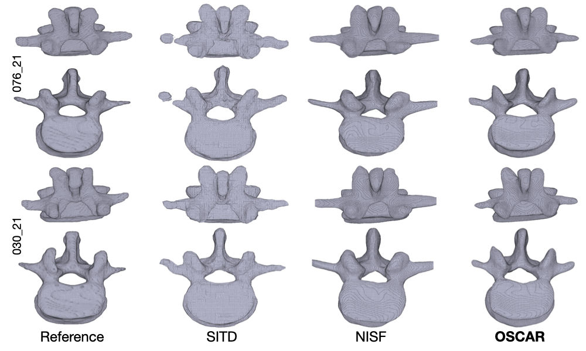
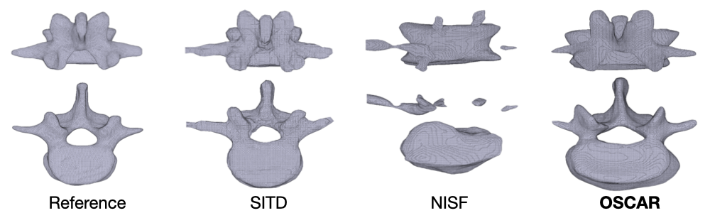
Because the latent couples geometry and acoustics, the mapping runs both ways: optimizing the latent on a target shape alone (occupancy, no image) recovers a plausible acoustic field — the synthesized B-mode matches the real scan's structure.
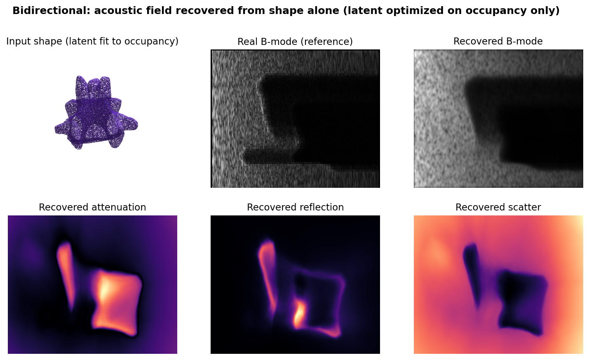
The acoustic head decomposes each frame into attenuation, reflection and scatter; integrating signal transmission along each scanline yields the confidence map and makes the model implicitly aware of shadowed (occluded) anatomy. The synthesized B-mode closely matches the real image.
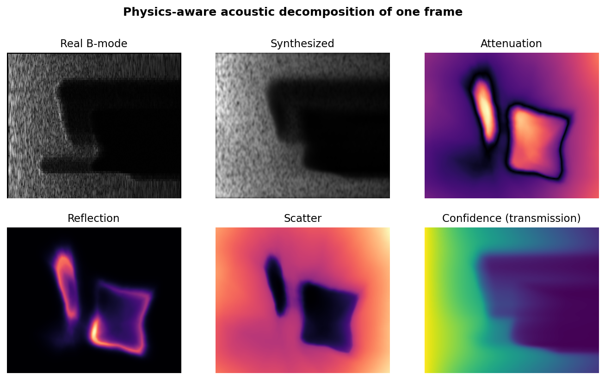
@article{wysocki2026oscar,
title = {Oscar: Occupancy-based shape completion via acoustic neural implicit representations},
author = {Wysocki, Magdalena and Buldu, Kadir Burak and Gafencu, Miruna-Alexandra
and Killeen, Benjamin D. and Azampour, Mohammad Farid and Navab, Nassir},
journal = {arXiv preprint arXiv:2603.08279},
year = {2026}
}
Accepted at MICCAI 2026 — please update to the proceedings entry once published.